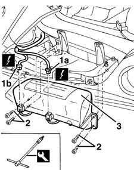

5580C22 AIR BAG MODULE - Passenger side - R.R.
- Path
- Procedures > 55 ELECTRICAL EQUIPMENT > 5580 SPECIAL ACCESSORIES > 5580C AIR BAG SYSTEM > 5580C22 AIR BAG MODULE - Passenger side - R.R.
- Kind
- repair procedure (removal / refitting; the operation number is the code)
- Applies to
- all engines; all production periods
- Interactive page
- https://sloeber94.github.io/elrnDB-fMltpl/en/#/2891973
Applies to: all engines; all production periods
Applies to: all engines; all production periods
 Removing
Removing
 Refitting
Refitting7040A09 passenger air bag compartment cover - r r
7040A96 facia glove compartment flap (1) lh or rh - r r (right and left)
5580C26 LOCK BARREL KEY/SWITCH for deactivating passenger 'AIR BAG - R.R.
7040A44 facia lh side cover - r r
7040A45 facia rh side cover - r r
1. Disconnect the electrical connections (1a, 1b).
 | Name | Connector |
|---|---|---|
1a | Outside passenger Air Bag |
| Name | Connector |
|---|---|---|
1b | Centre passenger Air Bag |
2. Undo the bolts with the appropriate tool.
 | Name | Country |
|---|---|---|
2 | Key | 1.852.150.000 |
3. Remove the Air Bag module.

Applies to: all engines; all production periods
Place the Air Bag module in the special cupboard, resting it on a free surface with the bag facing upwards.
Applies to: all engines; all production periods
Refitting
RemovingObserve the following precaution.
If a new module is being fitted, attach the labels.
Detach the removable part of the adhesive label from the new module and put it in a specific file recording the vehicle details (model, registration data, chassis no.) and the serial no. of the old control unit. This file should be kept for future checks.
A new label is supplied together with the module, to be stuck on top of the existing one. However, it should first be perforated to indicate the month and 14 years after the year when the module is fitted (e.g. 2013 will correspond to 1999).
Place the Air Bag module back in its housing.
Tighten the bolts to the recommended torque.
 | Fastening | Component | Ø | Value (daNm) |
|---|---|---|---|---|
- | Bolt | PASSENGER AIR BAG MODULE | M6 | 0.7 - 1.1 |
Reconnect the electrical connections.
7040A45 facia rh side cover - r r
7040A44 facia lh side cover - r r
5580C26 LOCK BARREL KEY/SWITCH for deactivating passenger 'AIR BAG - R.R.
7040A96 facia glove compartment flap (1) lh or rh - r r (right and left)
7040A09 passenger air bag compartment cover - r r
Connect the battery.
Check the operation of the system using the Examiner or another tester.
Topics linked from this page (9)
- 5580C AIR BAG SYSTEM
- 5580C26 LOCK BARREL KEY/SWITCH for deactivating passenger 'AIR BAG - R.R.
- 7040A09 passenger air bag compartment cover - r r
- 7040A37 fuse box cover - r r
- 7040A44 facia lh side cover - r r
- 7040A45 facia rh side cover - r r
- 7040A96 facia glove compartment flap (1) lh or rh - r r
- Q12 Outside passenger Air Bag
- Q13 Centre passenger Air Bag